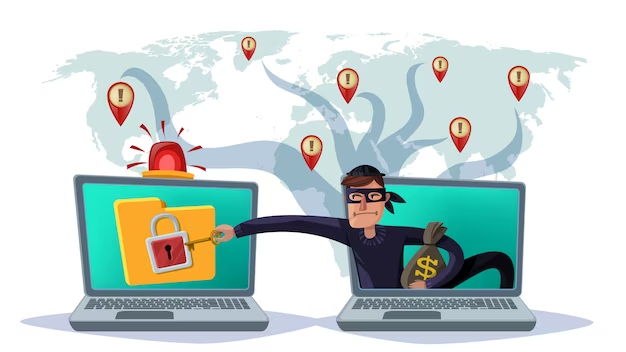
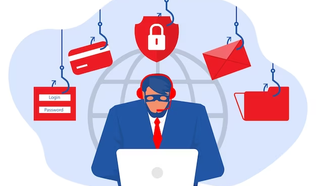

In today's interconnected world, phishing attacks have become increasingly prevalent and sophisticated. Phishing is a form of cybercrime where attackers trick individuals into sharing sensitive information such as passwords, credit card details, or personal data through fraudulent emails, messages, or websites.
The consequences of falling victim to a phishing attack can be severe, including identity theft, financial loss, and reputational damage. To help you safeguard yourself from these threats, here is a comprehensive guide to ultimate protection from phishing attacks. Visit phishprotection.com if you want to know more about protection from phishing.
Educate Yourself on Phishing Techniques

One of the most effective ways to protect yourself from phishing attacks is by educating yourself about the various techniques employed by cybercriminals. By understanding how phishing attacks work, you can identify warning signs and take appropriate actions to avoid becoming a victim. Some common phishing techniques include:
- Email Phishing: Attackers send deceptive emails impersonating legitimate organizations, enticing recipients to click on malicious links or download infected attachments.
- Spear Phishing: This targeted approach involves personalized messages that appear to be from trusted sources, increasing the likelihood of victims falling for the scam.
- Smishing: Phishers use SMS or text messages to trick individuals into providing sensitive information or clicking on malicious links.
- Vishing: In this method, scammers make phone calls impersonating legitimate organizations, attempting to extract confidential information.
- Pharming: Attackers redirect users from legitimate websites to fraudulent ones that closely resemble the original, aiming to capture sensitive data.
By familiarizing yourself with these techniques, you can stay vigilant and recognize potential phishing attempts.
Strengthen Your Security Measures
To enhance your protection against phishing attacks, implement the following security measures:
- Use Strong, Unique Passwords: Ensure your passwords are complex, containing a combination of uppercase and lowercase letters, numbers, and symbols. Additionally, avoid reusing passwords across multiple accounts.
- Enable Multi-Factor Authentication (MFA): MFA adds an extra layer of security by requiring an additional verification step, such as a fingerprint scan or a one-time code sent to your mobile device, when accessing your accounts.
- Keep Software Updated: Regularly update your operating system, web browsers, and security software to patch any vulnerabilities that could be exploited by phishers.
- Install Reliable Antivirus Software: Invest in reputable antivirus software that can detect and block phishing attempts, providing an additional line of defense against cyber threats.
Practice Safe Browsing and Email Habits

Adopting safe browsing and email habits is essential in minimizing the risk of falling victim to phishing attacks:
- Verify the Sender: Before interacting with an email or message, verify the sender's identity. Check the email address or contact the organization directly using their official website or known contact information.
- Be Wary of Unsolicited Emails: Exercise caution when receiving unsolicited emails, especially those requesting personal information or urging immediate action. Be skeptical of urgent or threatening language used in these messages.
- Hover Before Clicking: Before clicking on any link in an email or message, hover your mouse over it to reveal the actual URL. If it looks suspicious or unfamiliar, avoid clicking on it.
- Don't Share Sensitive Information: Never provide sensitive information such as passwords, Social Security numbers, or financial details through email or unfamiliar websites.
- Secure Websites: When providing sensitive information online, ensure the website is secure. Look for "https://" at the beginning of the URL, indicating a secure connection, and a padlock icon in the address bar.
Stay Informed and Remain Vigilant
Phishing attacks are constantly evolving, making it crucial to stay informed about the latest trends and tactics employed by cybercriminals. Regularly update your knowledge on phishing techniques through reliable sources such as cybersecurity blogs, news outlets, and official reports from reputable organizations. Additionally, maintain a healthy sense of skepticism, even when dealing with seemingly legitimate communications.
In the end, phishing attacks continue to be a major threat to individuals and organizations alike. By following the ultimate protection guide outlined in this post, you can significantly reduce your risk of falling victim to these attacks. It's important to stay vigilant, educate yourself and your employees, and use the necessary security tools and protocols to protect your sensitive data. Remember, prevention is key when it comes to mitigating the damaging effects of phishing attacks. Stay safe and secure in the digital world.